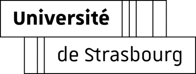
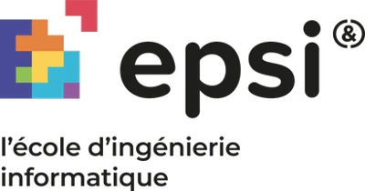
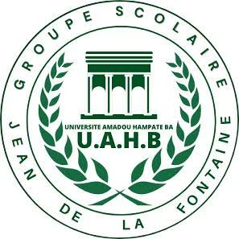

Hamedy
Yahya
Camara
J'automatise des infrastructures cloud avec Terraform, Ansible et Kubernetes. À Strasbourg, j'apprends à concevoir des outils d'apprentissage en réalité virtuelle et augmentée.
Profil
Deux parcours, un même objectif : des plateformes solides, pensées pour ceux qui les utilisent.
- Ville
- Strasbourg
- Recherche
- Alternance à partir de septembre 2027 (Master 2 SYNVA)
- Diplôme
- Master 2 Infrastructure Cloud, EPSI Paris, titre RNCP niveau 7
- En cours
- Master SYNVA, INSPÉ, Université de Strasbourg
Diplômé d'un Master 2 Infrastructure Cloud et Informatique Décisionnelle (EPSI Paris, titre RNCP niveau 7), je construis des infrastructures reproductibles et automatisées : images, réseau, serveurs, cluster et déploiement sont entièrement décrits en code.
Je poursuis aujourd'hui avec le master SYNVA (Ingénierie des systèmes numériques virtuels pour l'apprentissage) à l'INSPÉ de l'Université de Strasbourg : conception d'applications pédagogiques en réalité virtuelle, réalité augmentée et 3D, ingénierie de la formation et ergonomie des interfaces.
Ce double parcours me permet de faire le lien entre la technique et l'usage : savoir déployer et faire tourner une plateforme, mais aussi comprendre comment ses utilisateurs apprennent et s'en servent.
J'ai aussi été chef de projet SI à l'EPSI Paris, où j'ai encadré trois développeurs stagiaires, puis développeur fullstack sur l'application mobile StudiaNet.
Ma devise, Hamedy Yahya Camara
Projets
Faites tourner la salle, ou choisissez un projet dans la liste. Touchez un tableau pour voir toutes ses captures.
Parcours
Expériences
Chef de projet SI
EPSI Paris, service informatique, laboratoire MyDIL- Encadrement de trois développeurs stagiaires
- Planification et suivi des tâches dans Jira
- Environnement de test sur serveurs VMware ESXi
- Inventaire du parc informatique
Développeur fullstack, application mobile StudiaNet
Centre de Formation Privé MARIAS- Front-end mobile en React Native avec Expo Router
- Back-end et API avec Strapi v5, dont la gestion des foyers privés
- Modules logement et foyers : notation, galerie d'images, cartes façon Booking.com, filtres par ville
- Refonte de l'écran d'accueil à partir d'une maquette
- Tests sur mobile via localtunnel, build de l'APK Android avec EAS
Outils : React Native, Expo Router, JavaScript, Strapi v5, API REST, EAS Build, localtunnel
Développeur web et mobile (CDD)
Olivier PrintEvent- Développement web en PHP et mobile avec Flutter et Dart
- Correction de bugs et maintenance au sein d'une équipe technique
Formation

Master Sciences de l'éducation et de la formation, parcours Ingénierie des systèmes numériques virtuels pour l'apprentissage (SYNVA)
INSPÉ, Université de StrasbourgConception d'applications pédagogiques numériques : réalité virtuelle, réalité augmentée, immersion 3D.

Master Expert Informatique, Infrastructure Cloud et Informatique Décisionnelle
Titre RNCP niveau 7, Expert en Informatique et Systèmes d'InformationProjets MSPR : IaC sur AWS, gouvernance SI, BI et machine learning, infrastructure réseau.

Licence professionnelle Systèmes d'Information
Université Amadou Hampâté Bâ, Faculté des Sciences et TechniquesMémoire : application web de covoiturage (PHP, MySQL, architecture MVC en trois couches).
Licence 1 Physique-Chimie
Université de Nouakchott Al AasriyaEngagements
Ce que je fais en dehors des projets : évaluer, transmettre et donner un coup de main. Touchez un badge pour le retourner.
En 4 jours, les équipes de Bachelor 3 devaient concevoir une technologie pour un vaisseau interstellaire coupé de la Terre, face à des scénarios de crise. J'ai évalué 9 projets, en m'attachant surtout à leur résilience et à leur fonctionnement en mode dégradé.
Tri des produits, mise en place des stands et distribution de plats, pain, fruits et légumes aux étudiants.
Compétences
Conteneurs et orchestration
Docker, Kubernetes, K3s, k3d, Helm, Docker Compose, Traefik
Infrastructure as Code
Terraform, Ansible, Packer, Git
Cloud
AWS (EC2, VPC), Azure, GCP
CI/CD et systèmes
GitLab CI/CD, GitLab Runner, Linux, Bash, Nginx, Windows Server
Réseau et sécurité
VMware ESXi, Proxmox, pfSense, VLANs, VPN IPsec, Active Directory, Zabbix
Gouvernance et projet
Agile, Jira, ITIL 4, ISO 27002, COBIT, PCA et PRA, BPMN
Numérique éducatif
Réalité virtuelle, réalité augmentée, 3D, ingénierie pédagogique
Développement
React Native, Strapi, JavaScript, PHP, Flutter
Données
Python, Pandas, Scikit-learn, XGBoost, SQL
Certificats et formations
Les formations que j'ai suivies en dehors de mes diplômes. Touchez une médaille pour la retourner et voir le certificat.
Discutez avec mon assistant
Un assistant qui répond à vos questions sur mon parcours, mes projets et mes compétences.
Questions fréquentes des recruteurs :
Parlons-en
Je cherche une alternance à Strasbourg à partir de septembre 2027, dans le cadre de mon Master 2 SYNVA.